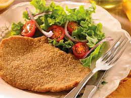

Cómo preparar milanesas en 6 simples pasos
Las milanesas son una comida increible, para chuparse los dedos

Milanesas comunes
La receta de milanesas es una de las más complejas del mundo.
Pero con estos pasos a continuación, nada puede malir sal.
Ingredientes
- Carne
- Ajo
- Perejíl
- Huevo
- Sal
- Aceite
- Pan rallado
Paso a paso
- Salar la carne
- Batir el huevo
- Picar ajo y perejil
- Agregarselo al huevo
- Apanar
- Cocinar